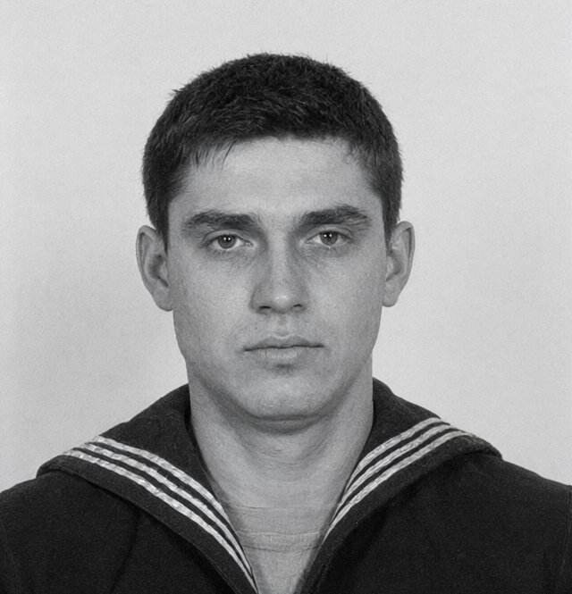

На Ваш запит від 24.11.1998 (за дорученням СК «Чорноморська гарантія» як страховика т/х «Ліман Стар») повідомляю.
21.11.1998 о 08:10 нарядом ПТС «Вовча коса» на західному пляжі Вовчої коси виявлено труп чоловіка, згодом упізнаного як Савчук Дмитро Олександрович, 1965 р. н., другий помічник капітана т/х «Ліман Стар», який зник 20.11.1998 під час висадки екіпажу шлюпкою.
За попередніми даними — нещасний випадок під час висадки. Кримінальна справа не порушувалась. Висновок судово-медичної експертизи буде надано після готовності (експерт Б. Ярмоленко).
Направляю витяг з протоколу огляду місця події та трупа і опис речей, вилучених при трупі. Речі зберігаються в Очаківському РВ, їх можна оглянути в робочий час за попереднім дзвінком.
Додатки: 1. Витяг з протоколу огляду місця події та трупа від 21.11.1998 — на 1 арк.
2. Опис речей — на 1 арк.
З повагою,
Слідчий Очаківського РВ капітан міліції Дьомін О. В. за участю судово-медичного експерта Ярмоленка Б. М., у присутності понятих Гнатюка І. С. і Рябошапки М. П. (с. Солоне), з участю с-нта Коваля В. (ПТС «Вовча коса»), при денному освітленні, хмарно, +6°, провів огляд.
Місце події розташоване на західному (морському) пляжі Вовчої коси за 2,4 км на північний схід від маяка Вовча коса і за 0,9 км на південний захід від ПТС «Вовча коса», за 6 м від урізу води, на смузі викинутих водоростей. Пісок мокрий, з черепашником. Слідів волочіння, слідів ніг біля трупа на момент огляду не виявлено (накат хвилі, дощ уночі).
Труп чоловіка лежить на правому боці, обличчям до моря. Одяг: штормова куртка темно-синя з капюшоном, застебнута на блискавку; светр вовняний сірий; робочі штани темні; гумові чоботи — на лівій нозі, правий чобіт відсутній; шкарпетки вовняні. Рятувального жилета на трупі немає (ймовірно, зірвано хвилями). Одяг мокрий, у складках — пісок.
На голові в тім'яно-потиличній ділянці — рана з нерівними краями, волосся злиплося. Рана, ймовірно, від удару об шлюпку або дно при перекиданні. Інших видимих ушкоджень, крім саден на кистях, не виявлено. Трупне задубіння виражене. Остаточно — за висновком СМЕ.
У внутрішній кишені куртки на блискавці виявлено поліетиленовий пакет на застібці, у ньому — паспорт моряка на ім'я Савчука Д. О. і два аркуші паперу (сторінки 41–42 з журналу), складені вчетверо, з рукописними записами, частково нечитабельні. Вміст пакета вологий. У задній кишені штанів — гаманець.
Труп направлено до Очаківського районного відділення бюро СМЕ. Речі вилучено, упаковано й опечатано.
Витяг вірний. Слідчий О. Дьомін

Чек (п. 4) — вставка, копія:
Опис склав слідчий О. Дьомін. Поняті: Гнатюк І. С., Рябошапка М. П.